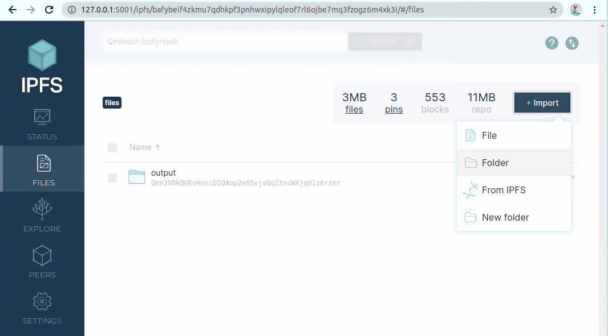
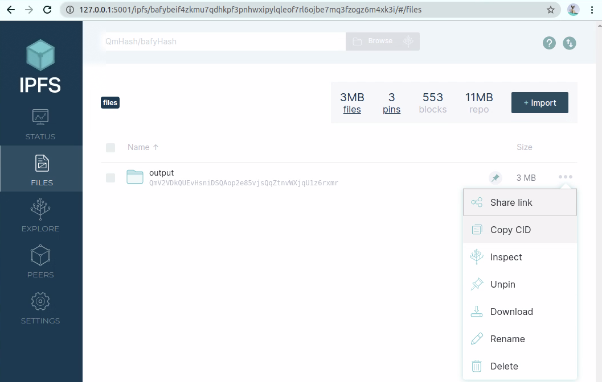
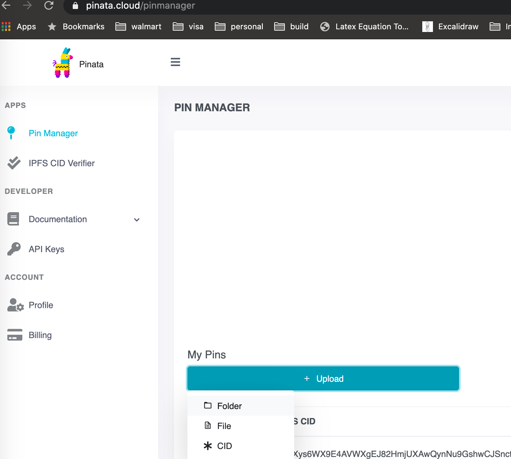
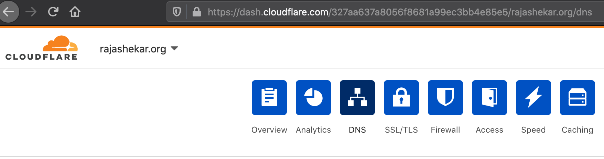
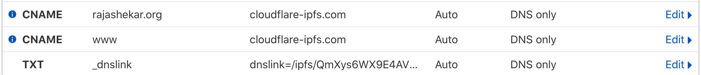
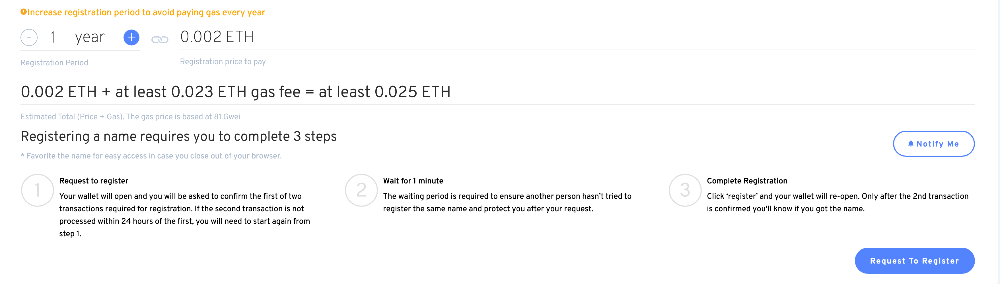
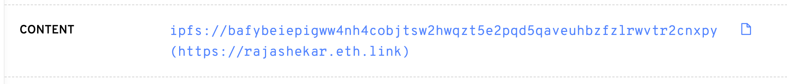
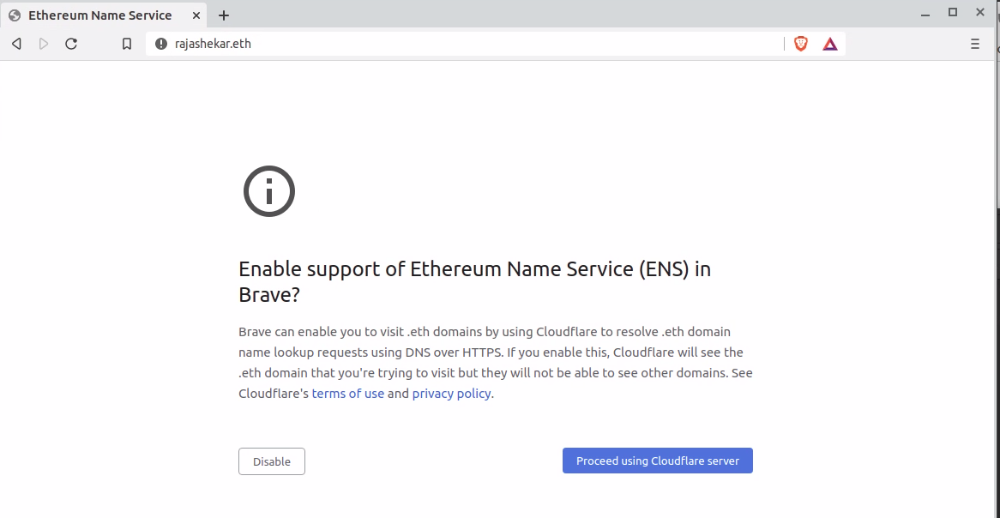
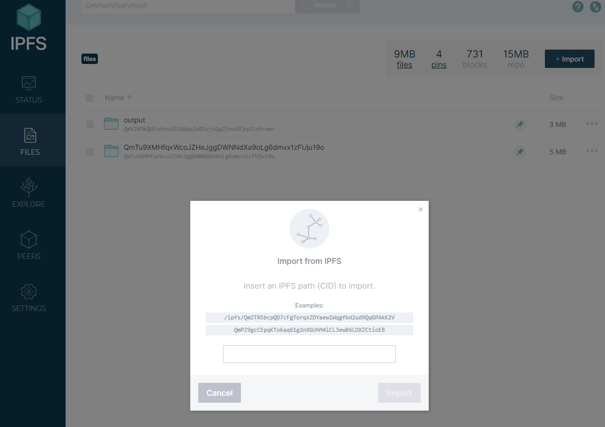
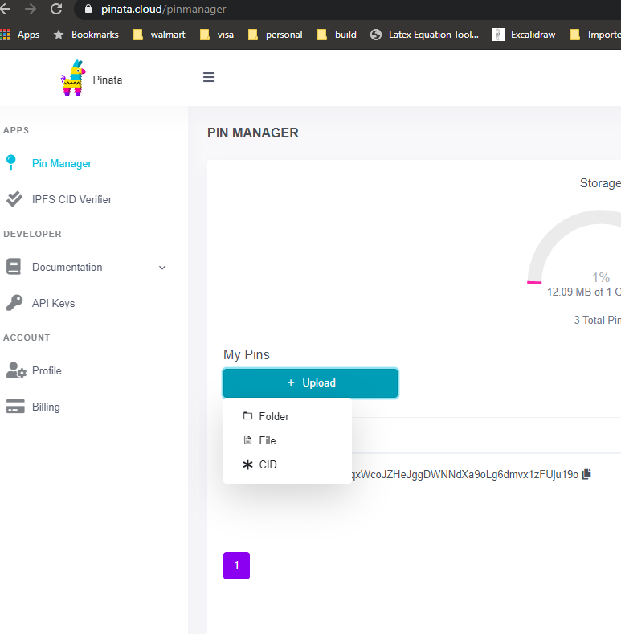

Steps to create decentralized website
In this blog, we will discuss on how to create decentralized website/blog like this one using below steps.
Table of Contents
- Generating Content ID (CID)
- Accessing Content through CID
- Deploying content in multiple nodes
- Conclusion
Generating Content ID (CID)
First you need to create ipfs CID (content id) by using IPFS InterPlanetary File System is a peer-to-peer network protocol for storing and sharing data in a distributed file system, with addresses based on content, not location.
There are 2 ways to do it, either
Through running your own ipfs node
- Install ipfs
- For mac -
brew install ipfs
- For Ubuntu Linux -
snap install ipfs
- For mac -
- Initialize ipfs -
ipfs init
- Run ipfs daemon -
ipfs daemon
- Go to http://localhost:5001
- At this point you can upload your file/folder that contains index.html of your site/blog
Note: You can use website generators like Nikola or Jekyll or Hugo. For Complete list of site generators you can check jamstack.org
This blog was built using Nikola - To upload go to http://localhost:5001 and click on files and click on import and choose file or folder that has index.html

- Once uploaded and pined, ipfs CID will be created.

Note: You need to keep your node running for CID to be accessible.
You can use VPS (Virtual Private Server) from Digital Ocean or Linode or Vultr or Amazon Light Sail or home server
to keep ipfs node running
Uploading folder to Pinata cloud
With this approach you dont need to install ipfs locally
Create account in Pinata Cloud and upload your file or folder that has index.html to pinata cloud and copy the CID, like below

Accessing Content through CID
Now its time to access/share your content through CID
Accessing through gateways
You can share CID to anyone and they can access through below gateways
- Through ipfs gateway - use
https://ipfs.io/ipfs/<YOUR-CID>/
- Through cloudflare ipfs gateway - use
https://cloudflare-ipfs.com/ipfs/<YOUR-CID>/
Accessing through custom domain
Above step is good, but you wont be remembering the CID will be difficult so how about accessing through custom domain
- Buy a domain from Google domains or Namecheap
- Best way is to maintain domain using Cloudflare (it will give SSL for free for your domain). Create Cloudflare account and add your domain
- Go to dns tab

- Add these records in DNS.
- Add
CNAMErecord for your domain & www and point that tocloudflare-ipfs.com
- Add
TXTrecord with the name_dnslink.your.websiteand valuednslink=/ipfs/<YOUR_CID>
- Add
Now you should be able to access your site through custom domain.
Accessing through ENS domain
If you want to go further to access your content through Ethereum blockchain you can use Ethereum Name Service (ENS)
-
Register your name on ENS Domains.
Note: You need to have Ethereum Wallet to proceed further, you can use Metamask Chrome plugin to purchase Ethereum. This will handle all the Ethereum transactions
-
Once you have Metamask installed in Chrome, you can follow the steps to register your name in ENS

- Once above step is done, you can add your ETH/BTC/LTC public address, so that this namespace can be used for crypto transactions.
- Here you can add your content
ipfs://<YOUR-CID>. This will create ahttps://<NAME>.eth.link. You can use this link to access your content.
Note: Publishing this way is expensive since this requires to pay gas price every time you modify your site.
- Anyone with your .eth domain can access your content, currently there are few browsers like Brave or Opera can be used to access .eth domains. If you visit any .eth domain in Brave, you will be given below message to enable ENS. Might be in future other browsers will adopt ENS.

Deploying content in multiple nodes
One of the advantage of using IPFS protocol is to avoid single point of failure, you can deploy the same content in multiple nodes. Now you have the CID, you can pin the same CID in multiple nodes
1. If you have CID from pinata.cloud, you can pin the CID in another node by using command - ipfs pin add <YOUR-CID>
or through UI

2. If you have CID through your node, then you can upload to pinata.cloud, like below

Conclusion
Done now you have your website/blog running using peer-to-peer network protocal IPFS.
You can access this blog through
- IPFS Cloudflare - https://rajashekar.org/posts/steps-to-create-decentralized-website
- Ethereum blockchain - https://rajashekar.eth.link/posts/steps-to-create-decentralized-website
Hope this helps.
Comments
Comments powered by Disqus